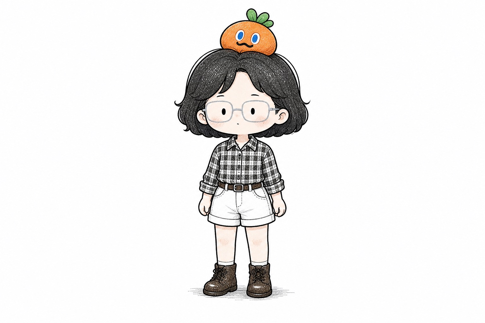

这是一页教程型预览：使用分栏 hero、金句卡、sticky 侧栏、时间线与深色系统面板，完整呈现 xiaoyugucang 的个人 IP 设定。

个人品牌不是“想一个人设”，而是把你真实会做的事、反复出现的兴趣、能被别人记住的表达方式，整理成一个可以持续生产的系统。
很多人做内容时最先问“什么赛道最赚钱”。但真正能持续的内容，通常来自你已经在生活里反复琢磨的东西。
对 xiaoyugucang 来说，谷仓不是一个场景词，而是一个工作方式：把灵感、方法、复盘、素材先囤起来，再慢慢加工成可以被看见的内容。
这一段用“六问网格”呈现方法论，用来展示教程页的信息组织能力。
那些你反复截图、收藏、写进备忘录里的主题，就是内容原料。
被反复咨询的问题，通常就是别人愿意听你讲的部分。
没经历过的东西很容易写空，真实体感会自动长出细节。
明确对象之后，内容会更像解决问题，而不是自言自语。
头像、色彩、语言习惯、反复出现的小物件，都会变成识别点。
没有素材库，就只能临时硬想；有谷仓，内容会自然发芽。
左侧是来源，右侧是筛选标准，形成“来源 + 判断”的双栏逻辑。
工作卡点、学习笔记、和朋友的一次聊天、突然想明白的一个方法。
评论区、私信、搜索词、别人听不懂但你能讲清楚的概念。
哪些内容被收藏？哪些内容你写得最顺？共性就是下一轮方向。
池子够大吗？
它是不是一个足够多人关心的问题。
切口够小吗？
大主题要落到具体场景，才会有人觉得“这说的是我”。
你讲得出细节吗？
细节来自真实经历，不来自万能模板。
它能进系统吗？
一次表达最好能沉淀为素材、组件、方法或清单。
用交错时间线把“做内容”从额外 KPI 变成日常系统。
看到一个问题、读到一句话、踩到一个坑，先扔进素材库，不急着写成完整内容。
把散落灵感按主题整理，挑出最有体感、最能帮到人的部分。
AI 不替你判断，但可以帮你把素材变成标题、提纲、卡片和长文骨架。
评论、收藏、转发和新的问题，再回到谷仓，成为下一批内容原料。
这一段用深色面板打破节奏，突出“系统流程”的表达方式。
收纳所有未完成、未命名、还在蛄蛹的想法。
保持松弛、具体、带一点笨拙的观察口吻。
负责整理、扩写、变体生成；最终审美判断仍由人完成。
先别急着成为谁。
把你已经在做的事，整理成一个别人能看见的系统。